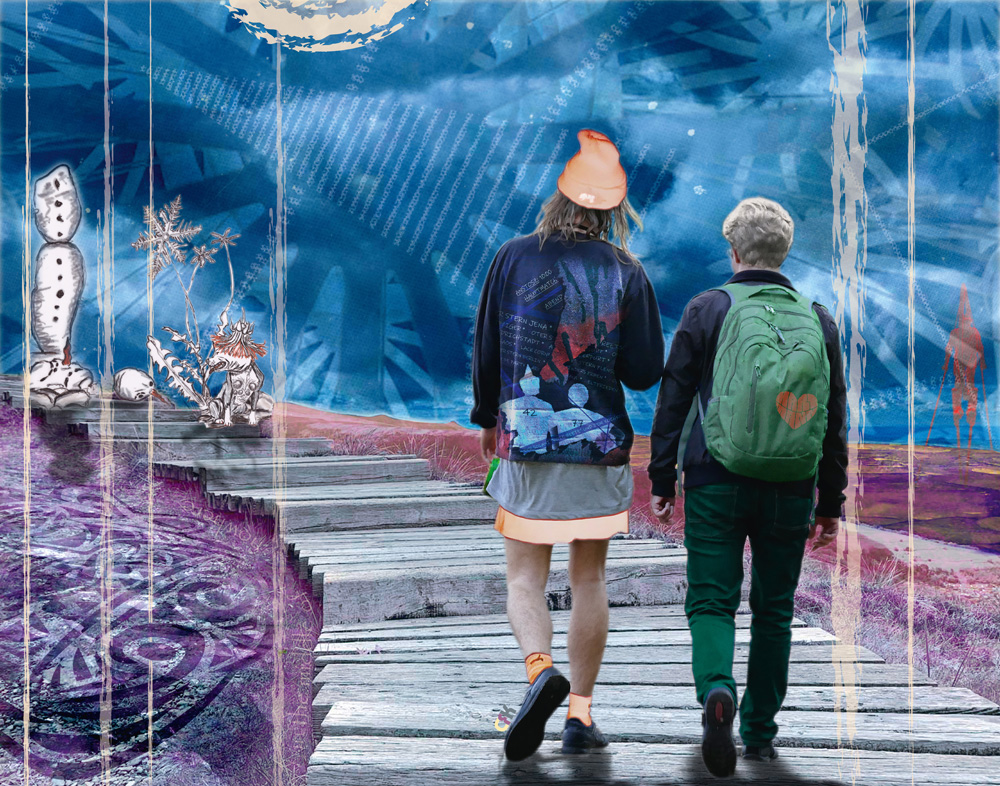
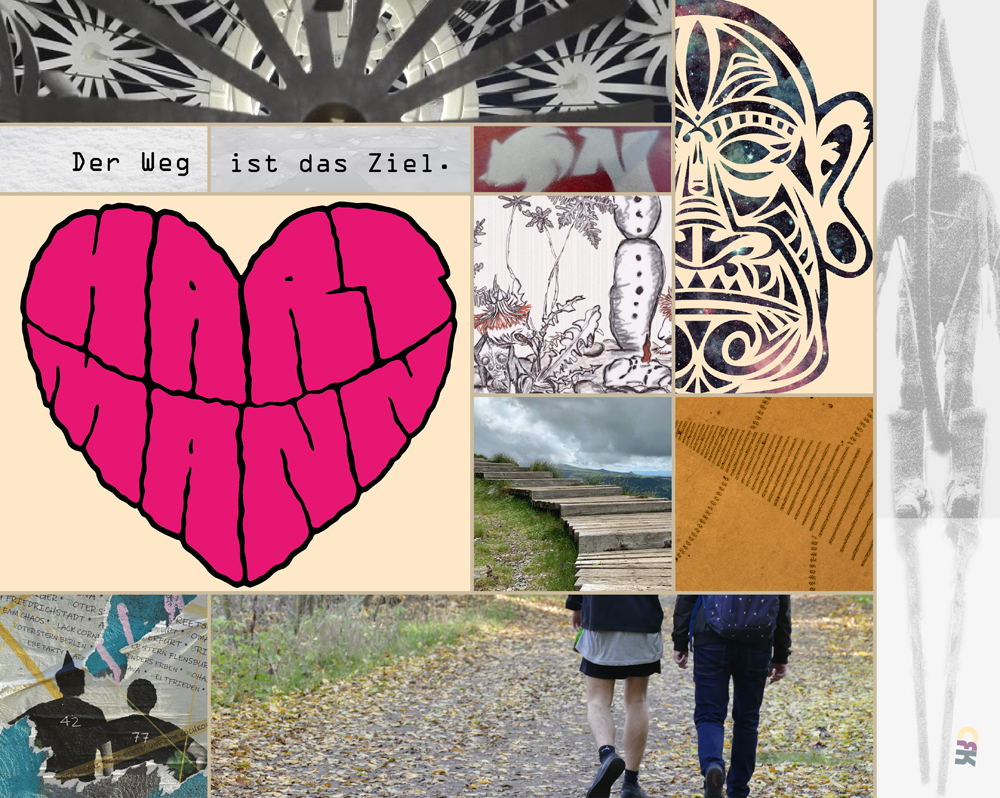

In the Middle of Nowhere



| Titel: | In the Middle of Nowhere |
|---|---|
| Entstehung: | LE, Oktober 2019 |
| Material: | 5 verschiedene Fotos aus den Jahren 2019 (eigener Fundus), Elemente einer Zeichung (Schneeblues) aus dem Jahre 2010, 2 verschiedene Illustratordateien aus dem Jahre 2019, 1 dotartige Verfremdung aus dem Jahre 2003, das Orginalfoto liegt leider nicht mehr vor und ein frei verfügbares Bild aus dem Pixelio-Fundus sowie verschiedene Texturen. Verwendete Programme: Photoshop und Illustrator.
 |
| Text zum Bild: | In the Middle of Nowhere? Auf Sohlen, die sein Leben bedeuten, tigert der Someone-else in the Middle of Nowhere von links nach rechts und umgekehrt, und wenn es ihn in den Scheitel fährt, dann auch von vorn nach hinten und andersherum, und falls das Wonder im Bra sich dreht, aber nur falls der Wind die Luftrichtung verweht, dann auch diagonal oder vielmehr kreuz und quer durch den Raum, den die Stäbe des Gritters umzäunen. Blind irrt er nicht umher, sondern folgt seinen Herzensgesetzen, jedoch oft kann oder will er die Gattertüren nicht sehen, wie sie offenstehen und mit ihren Klinken ihm ein Hallo zuwinken, um ihm ihre Lebensgeschichten in den Napf einzuschenken und ihn nach draußen in die Freiheit des (Da)Seins lockend zu lenken. Den Someone-else jedoch halten die Stäbe seiner Gitterumzäunung meist heimelig umfangen, nur ab und an tastet er sich mit seiner linken Pfote voran durch die Schatten des Gritters in den Sonnenschein der Freiheit hinein, um das Leben der anderen zu genießen und sich in den Säumen seiner Liebe(n) zu bräunen. Dann aber zieht er sich mit Gewalt wieder zurück, in das Middle seines Nowheres, um nicht alleinsam unter den Anderen zu sein und das Schwein in seinem Herzen zu anzumüttern. © CRK, LE, 10/2019 |